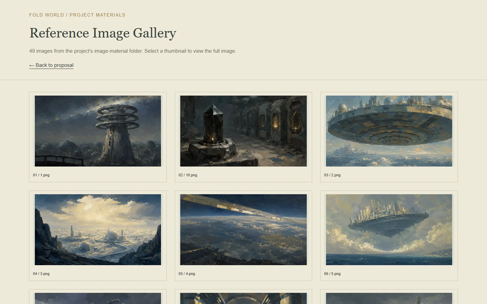
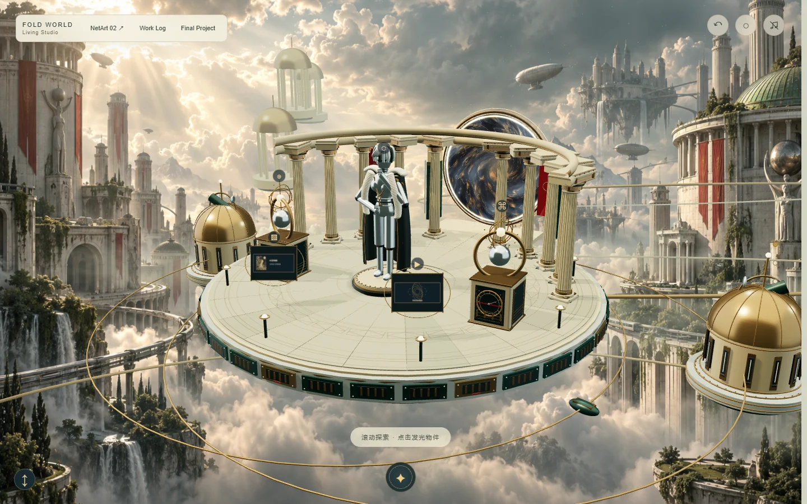

Date and version
9 November 2026 | Week 09 | Working Log version 0.3. Reporting period: 3–9 November 2026. This entry records the development and documentation session on 9 November.
Development progress
From the Abyss is my AI-assisted 2D animation introducing the background of a game. It remains in pre-production and shot testing. The existing archive contains storyboards for the first three chapters, 49 reference images and five selected video tests. This session focused on making these materials accessible through my Living Studio and recording a clearer plan for the next edit.
What I did
I checked the project proposal, storyboard pages, reference gallery and selected clips in the website archive. I preserved the relationship between the story, visual references and motion tests so that viewers can follow how the animation is developing. I also checked that the reference thumbnails open their full images.
I prepared a standalone web version of my Fold World Living Studio for GitHub Pages. I added direct entrances to the final-project proposal, Creative Coding 2.0 and the working log. I replaced the empty public log template with this dated record and removed local source paths from the published gallery data.
For the related NetArt 02 exercise, I added Moon Tides, a hand-controlled artwork that develops the lunar-water atmosphere and pointer interaction of my earlier website. A pretrained MediaPipe model estimates hand landmarks; hand position guides the visual focus, and pinching and releasing creates a ripple. The work is embedded in the studio and also has its own page. This is an interactive course study alongside the animation project.
I used Codex to help locate earlier records, prepare the website and implement the interaction. The project story and existing media provide the content; the new work in this session is the publication, interaction and documentation. I have not added new animation shots or completed the soundtrack in this entry.

To do next
- Choose one short passage from the existing storyboards and list the shots it needs.
- Assemble the corresponding clips into a rough cut with temporary narration. Compare character details, architecture, movement direction, lighting and framing between neighbouring shots.
- Test music transitions and sound levels after the basic pacing is clear. Record specific problems before regenerating any shot.
- Try the camera interaction under different lighting conditions and on another device, then record where hand tracking becomes unreliable.
Existing problems
The film is still a collection of production materials and separate tests. Visual continuity, narration, pacing and musical continuity need to be judged in an edited sequence. A finished website does not resolve these film-production tasks.
The interactive study depends on camera permission, lighting and hand visibility. Pointer control makes the visual response accessible without a camera, but it does not demonstrate AI tracking. The three-dimensional studio is also more demanding than the individual project pages.
Possible solutions
I will use a short rough cut to identify the most disruptive continuity problems, then revise only the shots that prevent the sequence from communicating clearly. I will keep comparison notes so that each revision has a specific purpose.
For the website, I kept the project pages directly accessible and included the model assets locally. The camera starts only after the viewer chooses it, provides tracking feedback and can be stopped. I will use further camera tests to adjust the interaction rather than treating the first working version as a complete evaluation.
